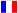

Mit Einstellungen ändern Sie das Aussehen des Panels und der Bauteilleiste. Das Einstellungsfenster erscheint in der Mitte des Panels und hat drei Registerkarten: Allgemein, Schaltereinheiten und Hinweise.
Die Änderung sehen Sie sofort auf dem Panel oder in der Bauteilleiste. Wenn Sie das Einstellungsfenster schließen, werden die Einstellungen gespeichert (siehe Einstellungen speichern).
| Schaltfläche | Was macht sie? |
|---|---|
| INI speichern | Speichert die Einstellungen der aktuellen Registerkarte in einer INI-Datei Ihrer Wahl, zum Beispiel als Sicherungskopie. |
| Standardeinstellungen laden | Setzt die Einstellungen der Registerkarte auf die zuletzt gespeicherten Werte zurück. |
| Sprachwahl | Die Auswahlliste oben: die Sprache der Namen in der Liste. |
| Info | Zeigt eine kurze Erklärung zur Registerkarte. |
| Capture | Kopiert ein Bild des Einstellungsfensters in die Zwischenablage. |
| Schließen | Schließt das Einstellungsfenster und speichert die Einstellungen. |
Einstellungen des Panels selbst.
| Einstellung | Was macht sie? |
|---|---|
| Überschrift (Titel) | Der Titel über dem Panel, zum Beispiel „Logikpanel“. |
| Panelfarbe (Color) | Die Hintergrundfarbe des Panels. |
| Farbe Eingänge, Farbe Verarbeitung, Farbe Ausgänge | Die Farbe der drei Balken Eingänge, Verarbeitung und Ausgänge oben auf dem Panel. |
| Raster Ja/Nein (ShowGrid) | Zeigt oder verbirgt die Rasterpunkte. |
| Farbe Rasterpunkte (DotColor) | Die Farbe der Rasterpunkte. |
| Rasterabstand X und Y (GridX, GridY) | Der Abstand zwischen den Rasterpunkten in Pixeln: X waagerecht, Y senkrecht. |
| Bildschirmkopie (Capture) | Bei True ziehen Sie mit der Maus ein Rechteck auf dem Panel; dieser Teil wird im unten gewählten Format gespeichert. Solange dies eingeschaltet ist, funktioniert die Auswahl mehrerer Bauteile nicht. |
| Aufnahmeformat (SavePicFormat) | sfClipbrd: in die Zwischenablage.
sfPNG, sfJPG oder sfBMP: als Datei SelectedRegion im Arbeitsordner
des Programms. |
| Knöpfe LogicRun/Person/Wagen Ja/Nein (KLogicRun) | Zeigt oder verbirgt die Knöpfe LogicRun und Person und Wagen (in der Werkzeugleiste und der Bauteilleiste). Für Anfänger können Sie die Einstellung auf False setzen, bis sie bei Lektion 12 des Lernpfads angekommen sind. Ein Panel mit einem LogicRun-Block oder einer Person funktioniert auch ohne die Knöpfe: Doppelklicken Sie auf den Block, um sein Fenster zu öffnen. |
Hier wählen Sie für jedes Bauteil, ob seine Schaltfläche in der Bauteilleiste steht: True zeigt sie, False blendet sie aus. Verbindung ist die Schaltfläche zum Verlegen von Drähten.
Mit Schaltzeichen (KSymbolen) wählen Sie, wie die Bauteile gezeichnet werden, auf dem Panel und in der Bauteilleiste. Wählen Sie, was an Ihrer Schule verwendet wird; alles funktioniert in jedem Stil gleich und Sie klicken an derselben Stelle. Sie können es auch schnell mit der Liste oben in der Titelleiste wählen, links neben der Schaltfläche Hilfe.
| Bauteil | IEC | ANSI |
|---|---|---|
| UND-Gatter | Rechteck mit & | D-Form |
| ODER-Gatter | Rechteck mit ≥1 | Schildform |
| NICHT-Gatter | Rechteck mit 1 und einem Kreis | Dreieck mit einem Kreis |
| Taster | Schließer mit Druckbetätigung (Bügel) | |
| Schalter | Schließer mit Handbetätigung (Strich) | |
| Lichtsensor | LDR: Widerstand mit zwei Lichtpfeilen | |
| Wärmesensor | NTC: Widerstand mit einem schrägen Strich | |
| Impulsgeber | Kreis mit einer Rechteckwelle | |
| Lampe | Kreis mit einem Kreuz | Kreis mit einem Glühfaden |
| Relais | Spule (Rechteck) mit einer gestrichelten Linie zum Kontakt | |
| Summer | Kuppel auf einem Sockel | |
| Motor | Kreis mit M | |
| Zähler, Speicher | Block mit schwarzem Rand und CTR4 oder RAM | |
Der kleine Kreis am Ausgang eines Gatters bedeutet: Das Signal wird invertiert. Ein geschlossener Kontakt und der Draht dahinter werden rot; eine Lampe oder ein Summer, die eingeschaltet sind, werden gelb. Anzeige, Voltmeter und DIP-Schalter sehen in jedem Stil gleich aus.
Für jedes Bauteil der Text des Hinweises, der erscheint, wenn Sie die Maus über seine Schaltfläche in der Bauteilleiste halten. Hinweis anzeigen (ShowHint) schaltet diese Hinweise ein oder aus.
Die Hinweistexte folgen der gewählten Sprache. Wählen Sie eine andere Sprache oder starten Sie Logic neu, kommen die Standardtexte dieser Sprache zurück. Ein eigener Text ist also vorübergehend.
Wenn Sie das Einstellungsfenster schließen, speichert Logic die Einstellungen automatisch im Ordner
ini (neben dem Programm). Beim nächsten Start gelten sie wieder.
| Registerkarte | Datei |
|---|---|
| Allgemein | defaultgrid.ini |
| Schaltereinheiten | defaultschakel.ini |
Mit INI speichern können Sie zusätzlich eine Kopie unter einem anderen Namen speichern.
Rechts in der Statusleiste wählen Sie die Sprache des Programms mit den Flaggen:
| Flagge | Sprache |
|---|---|
| Nederlands | |
| English | |
 | Français |
| Deutsch |
Schaltflächen, Hinweise, Menüs und diese Hilfe wechseln mit. Die Wahl wird gespeichert.